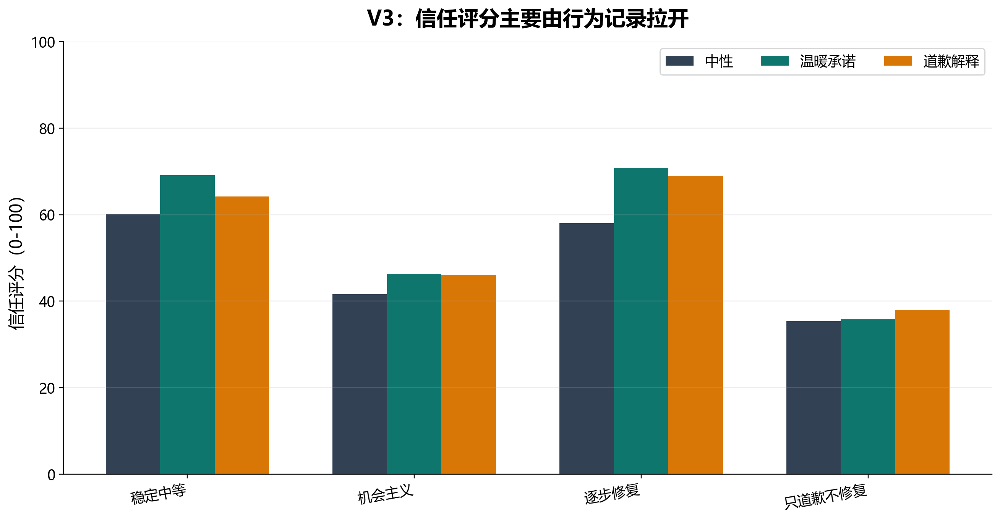
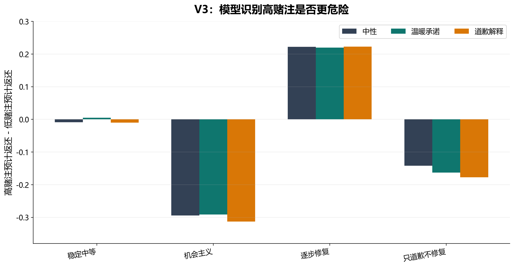
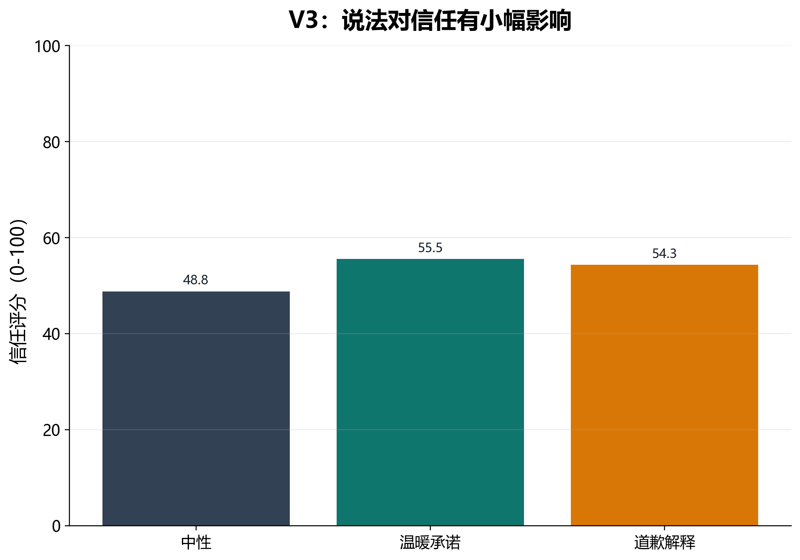
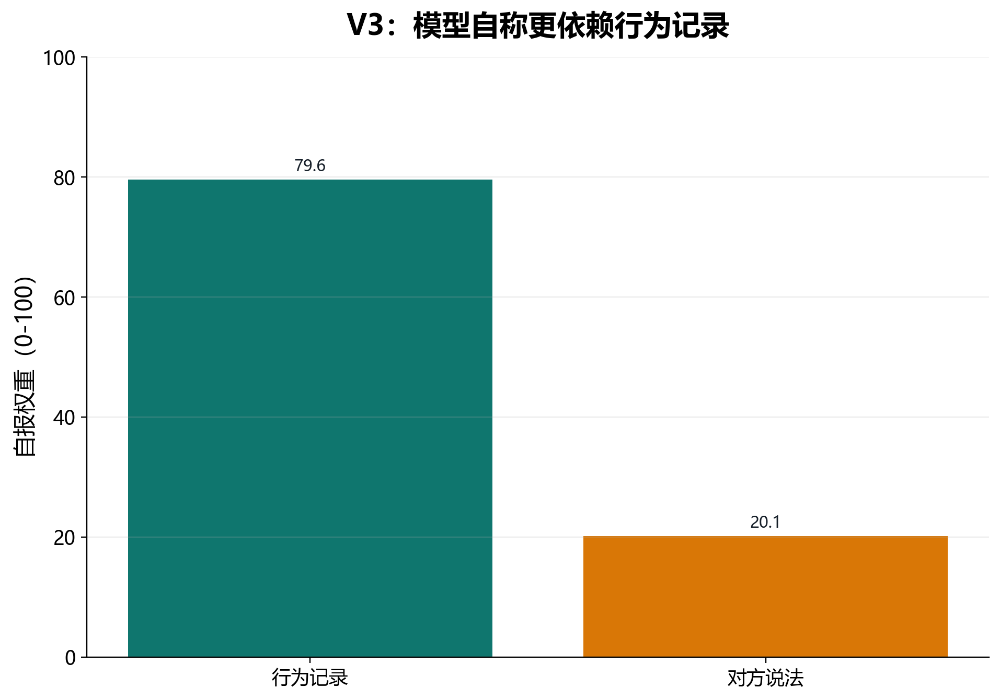

V3 crosses behavior pattern and language frame. Every observed history has average return 0.40, but individual return fractions are noisy. This tests whether language changes trust or prediction after behavior is controlled.
Successful calls: 72 / 72.
V3 在 V2 的基础上加入噪声，并正交组合行为模式与语言框架，检验在不那么整齐的历史中，温暖承诺或道歉解释是否会改变模型判断。
4 behavior patterns × 3 language frames × 6 repetitions = 72 runs；成功解析 72/72。所有行为模式的研究者计算平均返还都保持在约 0.40。
| 项目 | 具体操作 |
|---|---|
| 投资规则 | low / medium / high stake 最大投资分别为 4、7、10；投资乘 3 给 partner。 |
| 历史呈现 | 每轮呈现 stake、partner message、投资 token、partner received、partner returned。模型看 token 数，不直接看分析用 return_fraction。 |
| 噪声设置 | 每个 behavior pattern 的返还围绕目标结构波动，不再是 V2 那样整齐的固定序列。 |
| 语言操纵 | 同一类行为结构与三类语言框架交叉组合，使语言和行为在设计上分离。 |
| 条件/因素 | 取值 | 设计目的 |
|---|---|---|
| behavior pattern | stable_moderate | 返还围绕 0.40 稳定波动。 |
| behavior pattern | strategic_opportunist | 低赌注返还高，高赌注返还低。 |
| behavior pattern | noisy_repairing | 前期较低，后期改善。 |
| behavior pattern | apology_only_exploiter | 前期较高，后期恶化。 |
| language frame | neutral | 最小信息量的中性语言。 |
| language frame | warm_promise | 温暖、合作、承诺。 |
| language frame | apology_excuse | 道歉、解释、请求继续信任。 |
| 变量 | 类型/范围 | 含义 |
|---|---|---|
trust_rating | 模型输出，0-100 | 对 partner 的总体信任。 |
predicted_return_fraction_if_low/medium/high_stake | 模型输出，0-1 | 对三种 stake 下返还比例的预测。 |
investment_if_low/medium/high_stake | 模型输出，整数 | 三种 stake 下分别愿意投资多少。 |
message_weight | 模型输出，0-100 | 模型自报自己多大程度依赖语言信息。 |
behavior_weight | 模型输出，0-100 | 模型自报自己多大程度依赖行为记录。 |
conditions/factorial_design.json 读取 4 个行为模式和 3 个语言框架。message_weight 和 behavior_weight，用于诊断它自认为的信息来源。JSON schema 包括 trust_rating, 三个返还预测、三个投资计划、message_weight, behavior_weight, confidence, brief_reason。
message_weight / behavior_weight 会显式提示模型比较语言和行为，可能污染信息使用结构；V4 因此去掉这类探针。V3 把行为模式和语言框架正交组合，并加入噪声。结果延续 V2：行为结构仍然主导信任、条件预测和投资；语言有小幅影响，但不稳定，也没有覆盖行为证据。
模型自报主要依赖行为记录，而不是 partner 的语言。
语言不是完全无效，但明显弱于返还历史。
模型预测高赌注返还明显低于低赌注返还。




| 行为模式 | 信任 | 预测 low | 预测 high | high-low | low 投资 | high 投资 |
|---|---|---|---|---|---|---|
稳定中等stable_moderate | 64.5 | 0.402 | 0.397 | -0.005 | 3.72 | 9.44 |
噪声但修复noisy_repairing | 65.94 | 0.332 | 0.553 | 0.222 | 2.56 | 9.72 |
策略性机会主义者strategic_opportunist | 44.72 | 0.55 | 0.251 | -0.299 | 4 | 3.33 |
只道歉的剥削者apology_only_exploiter | 36.39 | 0.434 | 0.273 | -0.16 | 3.56 | 1.44 |
| 语言框架 | 信任 | high-low | high 投资 |
|---|---|---|---|
中性neutral | 48.79 | -0.056 | 6.5 |
温暖承诺warm_promise | 55.54 | -0.057 | 5.92 |
道歉解释apology_excuse | 54.33 | -0.069 | 5.54 |
V3 说明，在更有噪声的历史中，模型依然主要看实际行为结构，而不是简单被 warm promise 或 apology excuse 牵引。但 V3 直接询问了 message_weight 和 behavior_weight，这会污染任务结构。V4 因此去掉显性权重问题，改用 WTP 和下一轮投资这样的 costly choice。